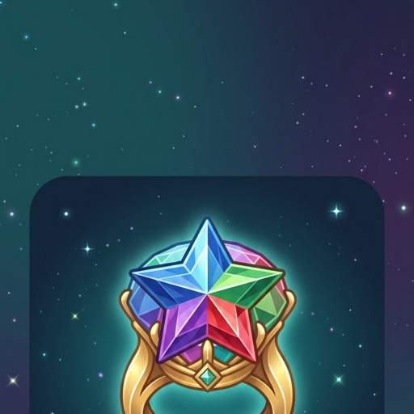
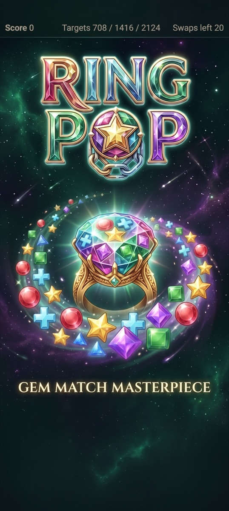

Cross-cutting · none of this is built yet
Install, splash, standalone
TODO/pwa.md records that the shelf has no manifest and no service worker at
all, and the plan is gated on one unverified claim: whether distinct manifest
id values really produce separate installs under nested scope. These frames
show what that claim buys if it holds — a phone home screen carrying several Croft games,
each launching to its own splash — and what it degrades to if it does not. Chrome follows
Direction B, since these screens only make sense once the art is doing the work.
The install path

It becomes its own app icon and opens without a browser bar. Everything stays on this device — there is no account and nothing to sign in to.
Add to Home screen
id
under a nested scope to install separately. Ship two and find out before
committing to twenty — the fallback is one "fun.croft.ing" icon opening the shelf.

Music and offline
Playing in Ring Pop
You are offline
Everything already on this device still plays. Nothing here needed a server anyway.
What these frames commit you to
| The gate | Frame 3 is the unverified claim. Ship two manifests and check before writing twenty — the plan already says so, and these frames are what "yes" looks like. |
| Art needed | A square icon and a portrait splash per game. Ten of twenty have both today; Solitaire has art but no icon file, and ten games have neither. |
| Install timing | Offered after repeat play, never on arrival, and always with the download size stated up front. |
| Music | One ambient loop on the shelf, one track per game, one remembered mute. Your files already split this way — seven ~30s loops and nine 2–3 min pieces. |
| Offline | Lists what is actually playable rather than showing a dead page. This is the shelf's whole pitch, so it should look deliberate. |